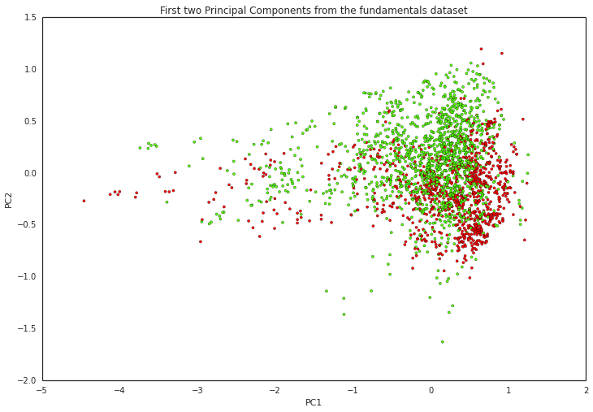
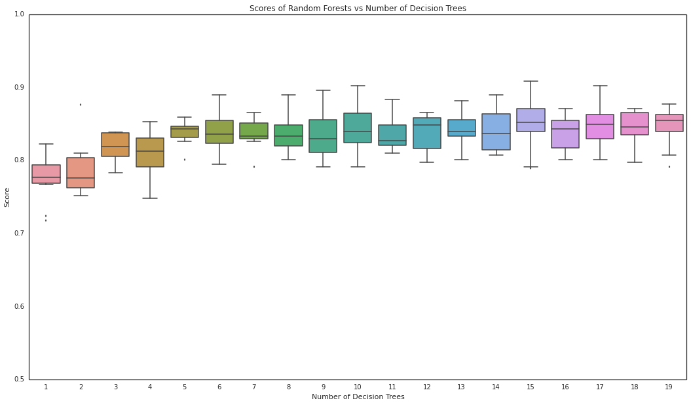
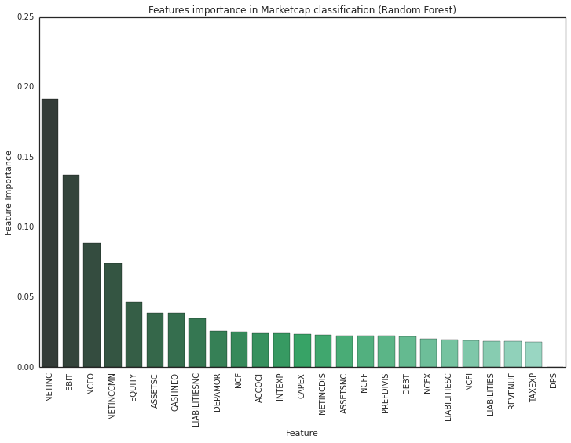
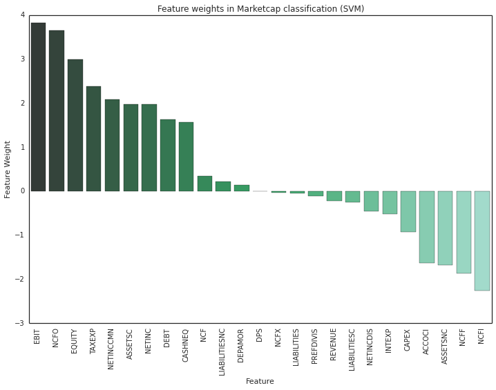
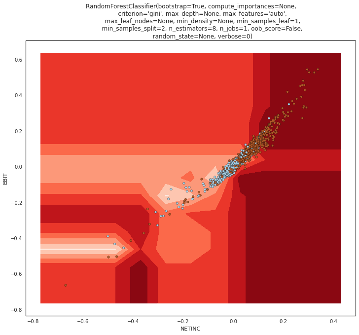
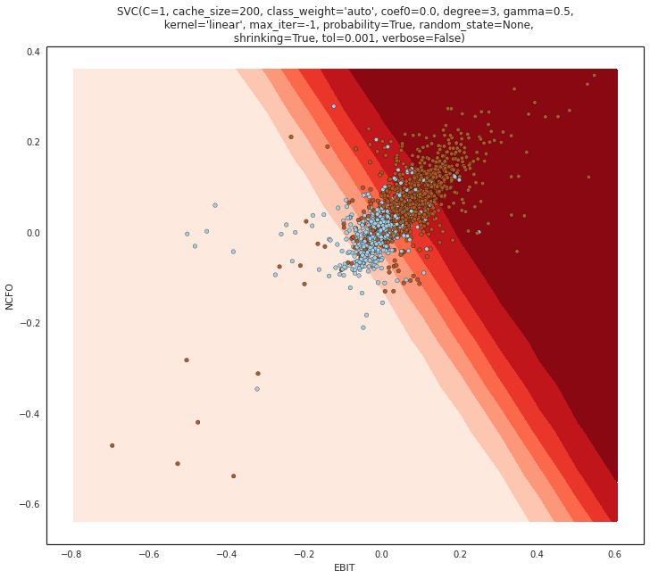
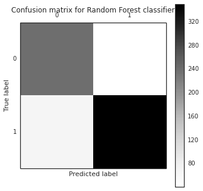
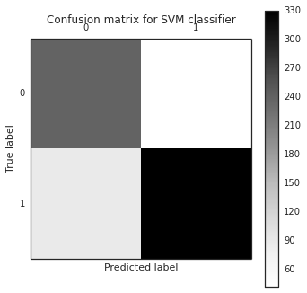

PCA and Supervised Learning
Dimensionality Reduction
We used the data assembled from the Quandl source and normalized it. The dataset is grouped into X and Y, X being the fundamental variables that are available in Balance Statements, Income Statements and Cash Flow Statements that do not influence the market capitalization of a company and Y being the market capitalization that is grouped into two classes, class 0 is the list of companies that has a market cap above the market median and the class 1 is the list of companies below market median. The two classes are found to be close to evenly balanced with 59% of companies falling in class 0 and 41% in class 1. For dimensionality reduction, we then applied Singular Value Decomposition (SVD) from the Scikit-Learn library. Then we looked at the first two Principal Components. Supervised Learning
For supervised learning, we used Random Forest and Support Vector Machine classifiers.Random Forest
The Quandl normalized dataset is broken into training and test sets. The training set is run through Random Forest classifier by varying the number of decision trees from 1 to 20. It observed that the classifier performance peaked and saturated at 8 trees. Random Forest Feature Selection
From the Random Forest classifier, the top features in the fundamentals data that related to the classification of the market capitalization are found to be the following along with their scores. Support Vector Machines (SVM)
The same dataset is then trained with the Support Vector Machine (SVM) in linear kernel mode with C=1 and gamma=0.5SVM Feature Selection
From the SVM classifier, the top features in the fundamentals data that related to the classification of the market capitalization are found to be the following along with their scores.  The classification of the top two features from the Random Forest and SVM are examined using the visual boundaries.   As can be seen, both the classifiers performed better and offered better prediction of the two classes. The overall classification performance is also examined using the confusion matrices for Random Forest and SVM respectively.  Conclusion
We used Random Forest and SVM classifers and used fundamental variables that do not relate to Market Cap as the input. Both the classifiers are trained and found to be producing consistent results. The top fundamental variables that have a higher impact on the market cap are found to be, Net Income (NETINC) Earning Before Interest & Taxes (EBIT) Net Cash Flow from Operations (NCFO) Net Income Common Stock (NETINCCMN) Shareholders Equity (EQUITY)